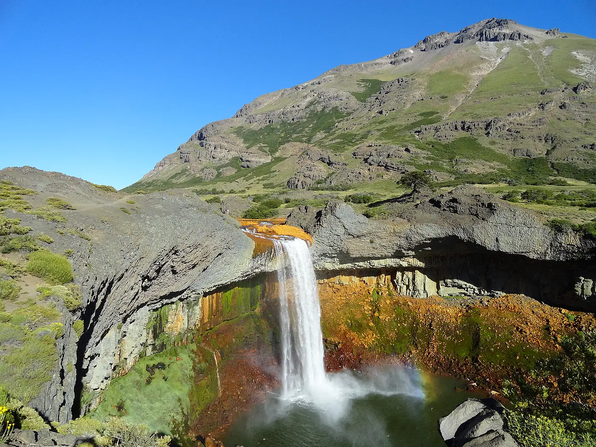

Salto del Agrio

1 / 3
Caviahue y alrededores · Verano
Una cascada que cae sobre paredes de basalto y piedras teñidas de ocre. Con sol, el arcoíris es casi seguro.
El salto, las paredes de basalto y los colores de la roca forman una de las postales de los alrededores de Caviahue. La ubicación de Google Maps te permite organizar la visita desde tu alojamiento.
Ubicación
Salto del Agrio
Ver ubicación en Google MapsTu lugar en Caviahue
Departamentos, cabañas y hostal boutique para disfrutar de la Patagonia con tu familia, amigos o pareja.